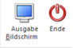

Die Jahresliste der geringfügig Beschäftigten, die über den Menüpunkt
1 Auswertungen
1 Jahreslisten
1 Jahresauswertung - geringfügig Beschäftigter
aufgerufen werden kann, gibt Auskunft über die Anzahl und die Bezüge der geringfügig Beschäftigten. Diese Information ist deshalb von Interesse, weil es von der Anzahl und vom Bezug abhängt, wie viel SV gezahlt werden muss.
ein geringfügig Beschäftigter
Für jeden geringfügig Beschäftigten ist vom Dienstgeber jedenfalls der UV-Beitrag auf Grund der mit der geringfügigen Beschäftigung verbundenen Teilversicherung in der Unfallversicherung gemäß § 7 Z 3 lit a ASVG zu entrichten.
mehrere geringfügig Beschäftigte
Hat der Dienstgeber mehr als einen geringfügig Beschäftigten, ist die Lohnsumme aller geringfügig Beschäftigten im Kalendermonat zu ermitteln. Die Lohnsumme besteht dabei aus den monatlichen allgemeinen Beitragsgrundlagen ohne Sonderzahlungen (§ 53a Abs 1 Z 2 ASVG).
ü Liegt die Lohnsumme aller geringfügig Beschäftigten im Kalendermonat unter der 1½-fachen Geringfügigkeitsgrenze, ist für jeden der geringfügig Beschäftigten nur der Unfallversicherungs-Beitrag zu entrichten (siehe oben).
ü Liegt die Lohnsumme aller geringfügig Beschäftigten im Kalendermonat aber über der 1½-fachen Geringfügigkeitsgrenze, hat der Dienstgeber für die bei ihm geringfügig Beschäftigten zusätzlich zu dem UV-Beitrag einen pauschalierten Dienstgeberbeitrag zu entrichten.
Bei Berechnung der Lohnsumme ist nicht auf die Dienstgeberkontonummer abzustellen, sondern der Dienstgeber in seiner Gesamtheit zu betrachten; Entgelte für geringfügig Beschäftigte in Filialbetrieben sind daher in die Lohnsumme mit einzubeziehen.
Die Auswertung
Nachdem der Menüpunkt aufgerufen wurde, können folgende Einschränkungen vorgenommen werden.
Ø Krankenkasse
Hier kann die Krankenkasse ausgewählt werden, für die die Auswertung durchgeführt werden soll. Durch Drücken der F9-Taste kann nach allen angelegten Krankenkassen (Betriebsstämmen) gesucht werden.
Wird hier keine Krankenkasse eingetragen, werden alle angelegten Krankenkassen ausgewertet.
Ø Monat von - bis
Um auch unterjährige Auswertungen durchführen zu können, können hier die Perioden ausgewählt werden, für die die Auswertung durchgeführt werden soll. Standardmäßig wird bei "Monat von" der Jänner und bei "Monat bis" das aktuelle Abrechnungsmonat vorgeschlagen.
Ø Jahr
Aus der Auswahllistbox kann das Abrechnungsjahr gewählt werden, für das die Auswertung durchgeführt werden soll. Es werden alle Jahreszahlen vorgeschlagen, für es bereits Abrechnungen gibt.
Buttons

Ø Ausgabe
Aus der Auswahllistbox kann gewählt werden, ob die Ausgabe am Bildschirm oder am Drucker durchgeführt werden soll. Standardmäßig wird die Ausgabe auf Bildschirm vorgeschlagen, die auch durch Drücken der F5-Taste gestartet werden kann.
Ø Ende
Mittels Ende Button oder ESC Taste wird das Fenster geschlossen
Die Liste
Die Liste enthält folgende Informationen:
Am Beginn der Liste wird die Krankenkasse (inkl. DG-Kontonummer) angezeigt, für die die Auswertung gemacht wurde.
Danach werden pro Monat alle AN (mit Name, Tarifgruppe, Krankenkasse, Beitragsgrundlage, Beitragssatz und Beitrag) ausgewiesen, die mit einer als "geringfügig" geltenden Tarifgruppe abgerechnet wurden.
Ist die Anzahl der geringfügigen AN größer oder gleich 2 und ist die Summe der Beitragsgrundlage NZ unter der 1 ½-fachen Geringfügigkeitsgrenze dann werden für alle Bezüge (inkl. SZ) nur der UV Beitrag berechnet. Der daraus resultierende Beitrag wird unter der Bezeichnung NZ für Normalzahlungen oder SZ für Sonderzahlungen (mit der der/die AN abgerechnet wurden) ausgewiesen.
Ist die Anzahl der geringfügigen AN größer oder gleich 2 und ist die Summe der Beitragsgrundlage NZ über der 1 ½-fachen Geringfügigkeitsgrenze, dann werden für alle Bezüge (inkl. SZ) auch die Pauschalierung berechnet. Der daraus resultierende Beitrag wird unter dem Zuschlag Z01 ausgewiesen.
Außerdem wird die BV ausgewiesen und sollte die Zahlung der Beiträge der geringfügig Beschäftigten erst im Dezember erfolgen, wird zusätzlich der BV-Zuschlag unter dem Zuschlag Z04 ausgewiesen.
Am Ende der Auswertung werden alle Beitragsgruppe, Bemessungsgrundlagen und Beiträge zusammengefasst.